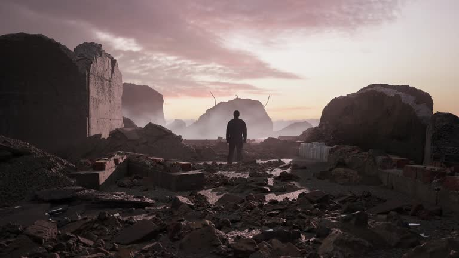
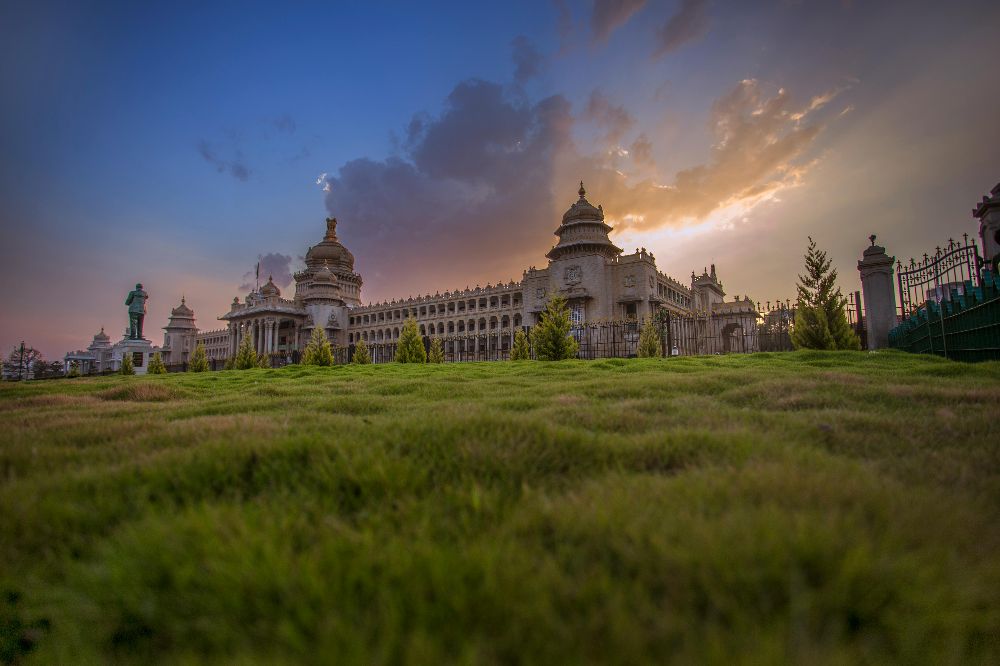

The Way of Conflict to Peace
Research Paper - Sustainable Development Goal 16.
Abstract
The paper discusses the multifaceted process of the transition from active conflict to a sustainable peace in the context of the UN Sustainable Development Goal 16. It contends that the truthful end of hostilities is just the initial move in a multi-generational procedure of reconstruction. Through assessing the humanitarian cost, pillars of inclusive peacebuilding, and the need to establish transitional justice, this study shows why accountable institutions are so important towards ensuring that systemic violence does not recur.
I. Social Economic and Humanitarian Cost of War
The major impediments to global sustainable development are still war and violent conflict. Other than the direct cost of loss of life, war systematically devastates the infrastructure that supports contemporary civilization, including hospitals, schools, and power grids. The resulting development gap can sometimes take decades to be overcome, and the wounds can be hard to heal and left in the social life of the country.

Infrastructure Collapse: Disaster results in the instant termination of vital state services. In case of the failure of education and healthcare systems, it is mortally experienced by the vulnerable groups, such as children, the elderly, and the poor. This forms a displacement and trauma cycle which can render whole areas unstable.
Social Fragmentation: Violence destroys the trust among various groups in the community and without any outside force, they can hardly collaborate in the future. It is not only physical bricks and mortar that is needed in the process of rebuilding, it is rather the long-term commitment to conversation and the utter prohibition of hostilities.
II. Multi Dimensional Peacebuilding
Peacebuilding is not a one time activity but a process that is meant to be long-term as it aims at establishing the conditions of the sustainable future. Formal peace will not be done by the signatures to a treaty and will need to remember the factors that actually bring peace like inequality, political representation and scarcity of resources.
Inclusive Political Processes: It is only through inclusive political processes that all the stakeholders will be able to sit at the negotiation table. This has to encompass women, the young generation, and other marginalized ethnic groups whose voices are not part of the mainstream political debate.
Reconciliation at a Community Level: Local reconciliation programmes gained at grassroots level are critical. The societies can start substituting the "us versus them" with a national identity by encouraging the truth telling and community projects.
III. Accountability and Reparations
Without justice there can be no peace that is permanent. The post-conflict society has a great challenge of putting in place equitable legal systems that will ensure those who committed the violence are brought to book and at the same time offer substantial remedies to the victims. Such equilibrium is necessary so as to avoid recurrence of the revenge cycle.

The Revival of the Rule of Law: SDG 16 focuses on the equality of access to justice by all citizens. This is in the context of a post-war world where there is the urgent need to reconstruct courtrooms, train legal professionals who are unbiased, and have open legal procedures that are not politically biased.
Victim Reparations: Justice does not only concern punishment, it concerns restoring. Reparations are either financial, psychological, or symbolic compensation of the pain suffered by the victims and is an indication of the state determination to a new era of human rights protection.
IV. Rebuilding Strong Institutions
The last and possibly the hardest part of the transition out of war is the establishment of powerful accountable institutions. The presence of stable governments offering basic services in an equitable manner assists in restoring trust among people and gives them some cushion against revert into conflict.

Transparency and Anti-Corruption: These institutions foster good governance and minimize corruption thus making sure that the national resources are utilized in the good of all citizens and not a few elite. When people realize that they are addressed by their needs with the use of transparent methods, the motivation towards the violent insurrection decreases. The ability to be transparent forms the basis of a peaceful future.
Conclusion: The process of replacing war with peace is a difficult one and it entails simultaneous attempts on attaining justice, reconstruction and institutional change. The only solution to ensuring that the peace enjoyed today is the peace of tomorrow is by adhering to the requirements of SDG 16 which is the pledge to establish inclusive societies. Accountability, transparency and rule of law are not mere ideologies, but are survival mechanisms of a just society.